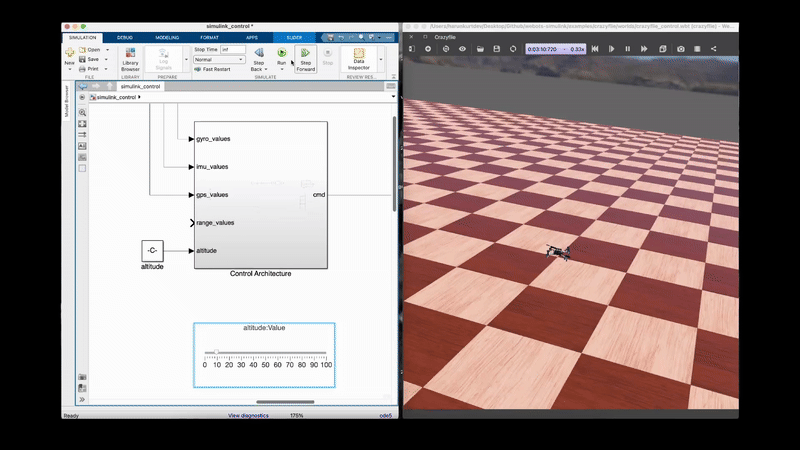

Crazyflie Drone¶

Simulink Architecture¶

The Crazyflie is a nano quadcopter developed by Bitcraze, widely used for research and education in aerial robotics. This simulation provides a comprehensive platform for developing and testing quadcopter control algorithms using Simulink.
System Overview¶
The Crazyflie quadcopter is a compact, lightweight aerial platform ideal for indoor flight experiments and control system development. The Webots simulation accurately models the vehicle dynamics and sensor characteristics.
Key Features¶
- Nano Quadcopter Design: Compact and lightweight for indoor operations
- Full 6-DOF Control: Complete attitude and position control
- Multiple Sensors: IMU, GPS, gyroscope, camera, and range finders
- State-Space Model: Pre-configured dynamics for controller design
- Obstacle Detection: Four-directional range sensors
Specifications¶
| Parameter | Value |
|---|---|
| Weight | 35g |
| Dimensions | 9 x 9 x 4.5 cm |
| Motors | 4 x Coreless DC motors (m1-m4) |
| Propellers | 3-inch propellers |
| Configuration | X-configuration quadcopter |
Physical Parameters¶
The simulation uses accurate physical parameters for realistic dynamics:
% Physical constants
g = 9.80665; % Gravity [m/s²]
l1 = 0.0465; % Arm length X [m]
l2 = 0.045; % Arm length Y [m]
m_drone = 0.03097; % Mass [kg]
% Inertia tensor components
Ix = 1.112951e-5; % Roll inertia [kg*m²]
Iy = 1.1143608e-5; % Pitch inertia [kg*m²]
Iz = 2.162056e-5; % Yaw inertia [kg*m²]
% Damping coefficients
b_roll = 1e-5; % Angular damping (roll)
b_pitch = 1e-5; % Angular damping (pitch)
b_yaw = 1e-5; % Angular damping (yaw)
b_drone = 1e-9; % Translational damping
% Motor parameters
km = 3.5077E-10; % Thrust coefficient
Components¶
Motors¶
| Motor | Device Name | Position |
|---|---|---|
| Motor 1 | m1_motor |
Front-right (CCW) |
| Motor 2 | m2_motor |
Back-right (CW) |
| Motor 3 | m3_motor |
Back-left (CCW) |
| Motor 4 | m4_motor |
Front-left (CW) |
Sensors¶
| Sensor | Device Name | Description |
|---|---|---|
| Inertial Unit | inertial unit |
Roll, pitch, yaw orientation |
| GPS | gps |
3D position (x, y, z) |
| Gyroscope | gyro |
Angular velocity (p, q, r) |
| Camera | camera |
Visual sensing |
Range Sensors¶
| Sensor | Device Name | Direction |
|---|---|---|
| Front Range | range_front |
+X direction |
| Left Range | range_left |
+Y direction |
| Back Range | range_back |
-X direction |
| Right Range | range_right |
-Y direction |
State-Space Model¶
The Crazyflie dynamics are modeled using state-space representation for controller design.
State Vector¶
Where:
- roll, pitch, yaw: Euler angles [rad]
- p, q, r: Angular velocities [rad/s]
- z: Altitude [m]
- vz: Vertical velocity [m/s]
Input Vector¶
State-Space Matrices¶
% A matrix (8x8) - System dynamics
A = zeros(8,8);
A(1:3, 4:6) = eye(3); % Angle-rate coupling
A(4,4) = -b_roll/Ix; % Roll damping
A(5,5) = -b_pitch/Iy; % Pitch damping
A(6,6) = -b_yaw/Iz; % Yaw damping
A(7,8) = 1; % Altitude-velocity coupling
A(8,8) = -b_drone/m_drone; % Vertical damping
% B matrix (8x4) - Input mapping
B = zeros(8,4);
B(4,2) = l1/Ix; % Roll moment input
B(5,3) = l2/Iy; % Pitch moment input
B(6,4) = 1/Iz; % Yaw moment input
B(8,1) = 1/m_drone; % Thrust input
% C matrix - Full state output
C = eye(8);
% D matrix - No direct feedthrough
D = zeros(8,4);
Simulink Integration¶
Available MATLAB Functions¶
Motor Control:
wb_motor_set_velocity(tag, velocity) % Set motor speed
wb_motor_set_position(tag, position) % Set motor position
wb_motor_set_torque(tag, torque) % Set motor torque
Sensor Reading:
wb_inertial_unit_get_roll_pitch_yaw(tag) % Get orientation [roll, pitch, yaw]
wb_gps_get_values(tag) % Get position [x, y, z]
wb_gyro_get_values(tag) % Get angular rates [p, q, r]
wb_distance_sensor_get_value(tag) % Get range sensor distance
wb_camera_get_image(tag) % Get camera image
Simulation Control:
Initialization Script¶
TIME_STEP = 16;
% Initialize IMU
imu = wb_robot_get_device('inertial unit');
wb_inertial_unit_enable(imu, TIME_STEP);
% Initialize GPS
gps = wb_robot_get_device('gps');
wb_gps_enable(gps, TIME_STEP);
% Initialize Gyroscope
gyro = wb_robot_get_device('gyro');
wb_gyro_enable(gyro, TIME_STEP);
% Initialize Camera
camera = wb_robot_get_device('camera');
wb_camera_enable(camera, TIME_STEP);
% Initialize Range Sensors
range_front = wb_robot_get_device('range_front');
wb_distance_sensor_enable(range_front, TIME_STEP);
range_left = wb_robot_get_device('range_left');
wb_distance_sensor_enable(range_left, TIME_STEP);
range_back = wb_robot_get_device('range_back');
wb_distance_sensor_enable(range_back, TIME_STEP);
range_right = wb_robot_get_device('range_right');
wb_distance_sensor_enable(range_right, TIME_STEP);
% Initialize Motors
m1_motor = wb_robot_get_device('m1_motor');
m2_motor = wb_robot_get_device('m2_motor');
m3_motor = wb_robot_get_device('m3_motor');
m4_motor = wb_robot_get_device('m4_motor');
Control System Design¶
System Block Diagram¶
flowchart TB
subgraph Reference["Reference Inputs"]
R1[/"Position<br/>(x_d, y_d, z_d)"/]
R2[/"Yaw<br/>(ψ_d)"/]
end
subgraph Control["Cascaded Control System"]
subgraph OuterLoop["Outer Loop - Position"]
PC[Position<br/>Controller]
end
subgraph MiddleLoop["Middle Loop - Attitude"]
AC[Attitude<br/>Controller]
end
subgraph InnerLoop["Inner Loop - Rate"]
RC[Rate<br/>Controller]
end
end
subgraph Mixer["Motor Mixer"]
MIX[X-Config<br/>Mixing]
end
subgraph Motors["Motors"]
M1[M1<br/>Front-Right]
M2[M2<br/>Back-Right]
M3[M3<br/>Back-Left]
M4[M4<br/>Front-Left]
end
subgraph Plant["Crazyflie Quadcopter"]
QUAD[Vehicle<br/>Dynamics]
end
subgraph Sensors["Sensor Suite"]
IMU_S[IMU]
GPS_S[GPS]
GYRO_S[Gyro]
RANGE[Range<br/>Sensors]
end
R1 --> PC
R2 --> AC
PC --> AC
AC --> RC
RC --> MIX
MIX --> M1
MIX --> M2
MIX --> M3
MIX --> M4
M1 --> QUAD
M2 --> QUAD
M3 --> QUAD
M4 --> QUAD
QUAD --> IMU_S
QUAD --> GPS_S
QUAD --> GYRO_S
QUAD --> RANGE
IMU_S --> AC
GPS_S --> PC
GYRO_S --> RC
RANGE --> PC
style Reference fill:#e1f5fe
style Control fill:#e8f5e9
style Mixer fill:#fff8e1
style Motors fill:#ffebee
style Plant fill:#fce4ec
style Sensors fill:#f3e5f5Cascaded Control Architecture¶
flowchart LR
subgraph Position["Position Control (10 Hz)"]
POS_D[/"x_d, y_d, z_d"/]
POS[/"x, y, z"/]
POS_ERR((Δ))
POS_CTRL[Position PID]
ATT_CMD["φ_d, θ_d, T"]
POS_D --> POS_ERR
POS --> POS_ERR
POS_ERR --> POS_CTRL
POS_CTRL --> ATT_CMD
end
subgraph Attitude["Attitude Control (250 Hz)"]
ATT_D[/"φ_d, θ_d, ψ_d"/]
ATT[/"φ, θ, ψ"/]
ATT_ERR((Δ))
ATT_CTRL[Attitude PID]
RATE_CMD["p_d, q_d, r_d"]
ATT_CMD --> ATT_D
ATT_D --> ATT_ERR
ATT --> ATT_ERR
ATT_ERR --> ATT_CTRL
ATT_CTRL --> RATE_CMD
end
subgraph Rate["Rate Control (500 Hz)"]
RATE_D[/"p_d, q_d, r_d"/]
RATE[/"p, q, r"/]
RATE_ERR((Δ))
RATE_CTRL[Rate PID]
MOMENT["τ_φ, τ_θ, τ_ψ"]
RATE_CMD --> RATE_D
RATE_D --> RATE_ERR
RATE --> RATE_ERR
RATE_ERR --> RATE_CTRL
RATE_CTRL --> MOMENT
end
style Position fill:#e3f2fd
style Attitude fill:#fff3e0
style Rate fill:#e8f5e9Motor Mixing (X-Configuration)¶
flowchart TB
subgraph MixerInput["Control Commands"]
T["Thrust (T)"]
TAU_PHI["Roll Moment (τ_φ)"]
TAU_THETA["Pitch Moment (τ_θ)"]
TAU_PSI["Yaw Moment (τ_ψ)"]
end
subgraph MixingMatrix["X-Configuration Mixing"]
MIX["Motor Mixing Matrix"]
end
subgraph MotorOut["Motor Commands"]
W1["ω₁ = T + τ_φ - τ_θ - τ_ψ"]
W2["ω₂ = T - τ_φ - τ_θ + τ_ψ"]
W3["ω₃ = T - τ_φ + τ_θ - τ_ψ"]
W4["ω₄ = T + τ_φ + τ_θ + τ_ψ"]
end
subgraph Layout["Motor Layout (Top View)"]
L1[" M4(CCW) M1(CW) "]
L2[" ╲ ╱ "]
L3[" ╲ ╱ "]
L4[" × "]
L5[" ╱ ╲ "]
L6[" ╱ ╲ "]
L7[" M3(CW) M2(CCW) "]
end
T --> MIX
TAU_PHI --> MIX
TAU_THETA --> MIX
TAU_PSI --> MIX
MIX --> W1
MIX --> W2
MIX --> W3
MIX --> W4
style MixerInput fill:#e1f5fe
style MixingMatrix fill:#fff8e1
style MotorOut fill:#e8f5e9
style Layout fill:#f5f5f5Control Loop Details¶
flowchart TB
subgraph AltitudeControl["Altitude Control"]
Z_D[/"z_d"/]
Z[/"z"/]
VZ[/"v_z"/]
ERR_Z((+<br/>-))
PID_Z[PID<br/>Kp=50, Ki=5, Kd=15]
THRUST["Thrust Command"]
Z_D --> ERR_Z
Z --> ERR_Z
ERR_Z --> PID_Z
VZ --> PID_Z
PID_Z --> THRUST
end
subgraph AttitudeLoop["Attitude Loop (Roll Example)"]
PHI_D[/"φ_d"/]
PHI[/"φ"/]
P[/"p"/]
ERR_PHI((+<br/>-))
PID_PHI[PID<br/>Kp=25, Ki=1, Kd=8]
TAU_ROLL["τ_φ"]
PHI_D --> ERR_PHI
PHI --> ERR_PHI
ERR_PHI --> PID_PHI
P --> PID_PHI
PID_PHI --> TAU_ROLL
end
THRUST --> MIXER[Motor<br/>Mixer]
TAU_ROLL --> MIXER
style AltitudeControl fill:#e3f2fd
style AttitudeLoop fill:#f3e5f5Attitude Control¶
The inner loop controls roll, pitch, and yaw using PID controllers:
% PID gains for attitude control
Kp_roll = 25; Ki_roll = 1; Kd_roll = 8;
Kp_pitch = 25; Ki_pitch = 1; Kd_pitch = 8;
Kp_yaw = 10; Ki_yaw = 0.5; Kd_yaw = 2;
% Attitude controller
function [roll_cmd, pitch_cmd, yaw_cmd] = attitude_control(current, desired)
roll_error = desired.roll - current.roll;
pitch_error = desired.pitch - current.pitch;
yaw_error = desired.yaw - current.yaw;
roll_cmd = Kp_roll * roll_error + Kd_roll * (0 - current.p);
pitch_cmd = Kp_pitch * pitch_error + Kd_pitch * (0 - current.q);
yaw_cmd = Kp_yaw * yaw_error + Kd_yaw * (0 - current.r);
end
Altitude Control¶
Outer loop for altitude hold:
% PID gains for altitude control
Kp_z = 50; Ki_z = 5; Kd_z = 15;
% Altitude controller
function thrust = altitude_control(z_current, z_desired, vz_current)
z_error = z_desired - z_current;
thrust = m_drone * g + Kp_z * z_error + Kd_z * (0 - vz_current);
thrust = max(0, min(thrust, max_thrust)); % Saturation
end
Motor Mixing¶
Convert control commands to individual motor speeds:
function [w1, w2, w3, w4] = motor_mixing(thrust, roll_cmd, pitch_cmd, yaw_cmd)
% X-configuration mixing
w1 = thrust + roll_cmd - pitch_cmd - yaw_cmd; % Front-right
w2 = thrust - roll_cmd - pitch_cmd + yaw_cmd; % Back-right
w3 = thrust - roll_cmd + pitch_cmd - yaw_cmd; % Back-left
w4 = thrust + roll_cmd + pitch_cmd + yaw_cmd; % Front-left
% Apply motor limits
w1 = max(0, min(w1, max_motor_speed));
w2 = max(0, min(w2, max_motor_speed));
w3 = max(0, min(w3, max_motor_speed));
w4 = max(0, min(w4, max_motor_speed));
end
Usage Examples¶
Basic Operation¶
- Load World: Open
crazyflie/worlds/crazyflie_control.wbtin Webots - Set Controller: Select
crazyflie_simulink_controlas the controller - Open Simulink: Load
simulink_control.slxin MATLAB - Run Simulation: Start both Webots and Simulink
Hover Control Example¶
% Simple hover controller
desired_altitude = 1.0; % meters
desired_yaw = 0; % radians
while wb_robot_step(TIME_STEP) ~= -1
% Read sensors
orientation = wb_inertial_unit_get_roll_pitch_yaw(imu);
position = wb_gps_get_values(gps);
angular_rates = wb_gyro_get_values(gyro);
% Compute control
thrust = altitude_control(position(3), desired_altitude, angular_rates(3));
[roll_cmd, pitch_cmd, yaw_cmd] = attitude_control(...);
% Motor mixing
[w1, w2, w3, w4] = motor_mixing(thrust, roll_cmd, pitch_cmd, yaw_cmd);
% Apply motor commands
wb_motor_set_velocity(m1_motor, w1);
wb_motor_set_velocity(m2_motor, w2);
wb_motor_set_velocity(m3_motor, w3);
wb_motor_set_velocity(m4_motor, w4);
end
Position Control¶
Cascade control structure for waypoint navigation:
% Position controller (outer loop)
function [roll_des, pitch_des] = position_control(pos_current, pos_desired, yaw)
% Position error in world frame
ex = pos_desired(1) - pos_current(1);
ey = pos_desired(2) - pos_current(2);
% Transform to body frame
ex_body = cos(yaw) * ex + sin(yaw) * ey;
ey_body = -sin(yaw) * ex + cos(yaw) * ey;
% Desired attitude commands
pitch_des = Kp_pos * ex_body;
roll_des = -Kp_pos * ey_body;
% Limit angles
pitch_des = max(-max_angle, min(pitch_des, max_angle));
roll_des = max(-max_angle, min(roll_des, max_angle));
end
Applications¶
Research Applications¶
- Control Algorithm Development: Test new attitude and position controllers
- State Estimation: Implement sensor fusion algorithms
- Path Planning: Develop trajectory generation and following
- Swarm Robotics: Multi-quadcopter coordination studies
Educational Applications¶
- Flight Dynamics: Understanding quadcopter physics
- Control Systems: PID, LQR, and model predictive control
- Sensor Fusion: Complementary and Kalman filtering
- Embedded Systems: Real-time control implementation
File Structure¶
crazyflie/
├── controllers/
│ └── crazyflie_simulink_control/ # Simulink integration
│ ├── crazyflie_simulink_control.m # Initialization with state-space model
│ ├── simulink_control.slx # Main Simulink model
│ └── wb_*.m # MATLAB wrapper functions
└── worlds/
└── crazyflie_control.wbt # Webots world file
References¶
- Bitcraze Crazyflie
- MATLAB Crazyflie Simulation
- Quadcopter Dynamics and Control
- Webots Crazyflie Model
Educational Purpose: The Crazyflie simulation provides an excellent platform for learning quadcopter dynamics, control system design, and sensor integration. The state-space model enables rigorous controller design using modern control techniques including LQR, pole placement, and model predictive control.